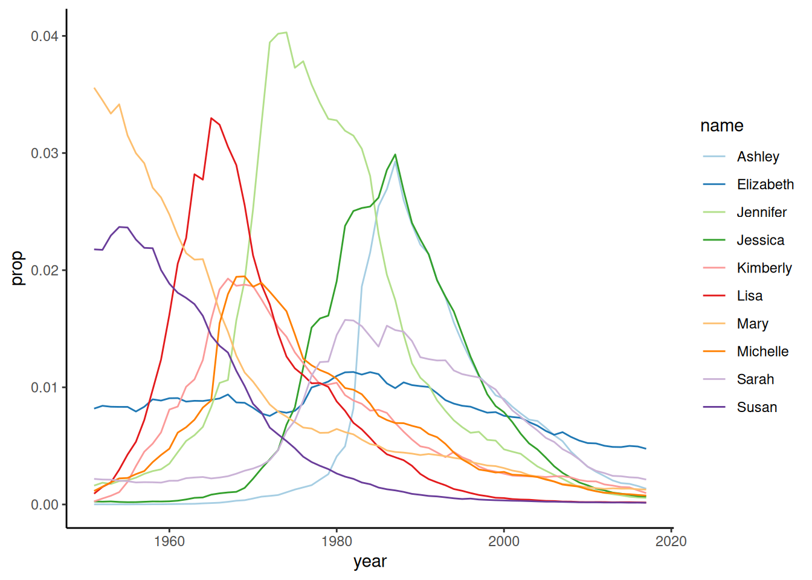
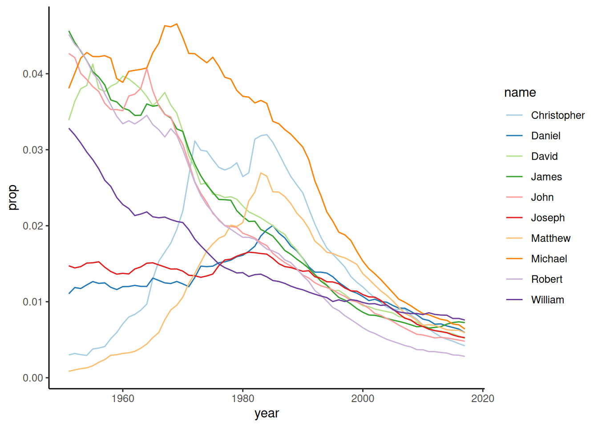
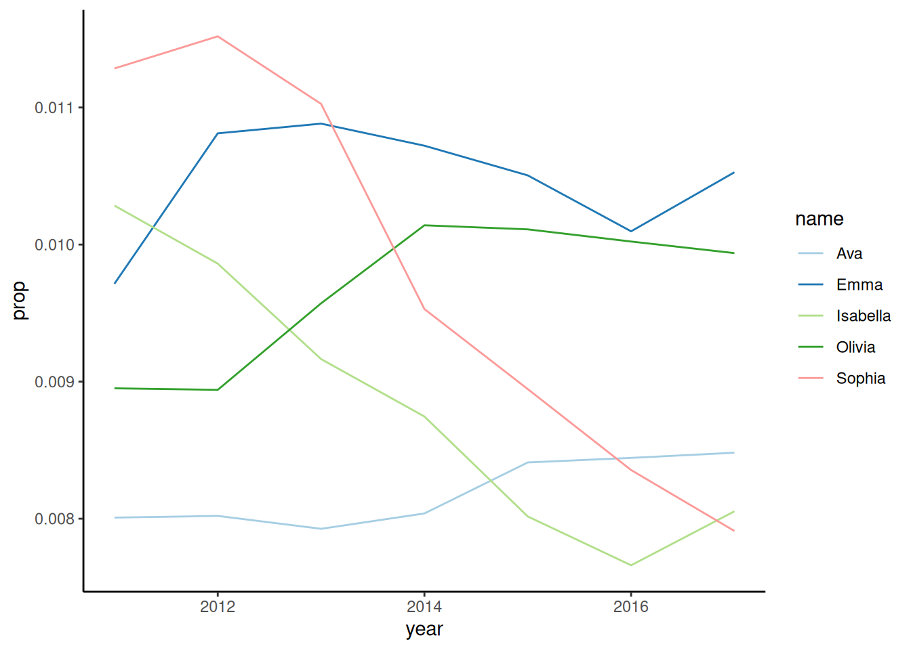
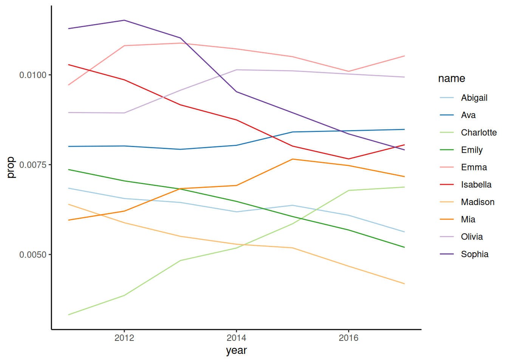

library(babynames)
library(knitr)
library(dplyr)
library(ggplot2)
library(tidyr)
library(pheatmap)analysis
Load libraries
Display the first 10 lines of the babynames table
head(babynames) |> kable()| year | sex | name | n | prop |
|---|---|---|---|---|
| 1880 | F | Mary | 7065 | 0.0723836 |
| 1880 | F | Anna | 2604 | 0.0266790 |
| 1880 | F | Emma | 2003 | 0.0205215 |
| 1880 | F | Elizabeth | 1939 | 0.0198658 |
| 1880 | F | Minnie | 1746 | 0.0178884 |
| 1880 | F | Margaret | 1578 | 0.0161672 |
Define functions
Code
get_most_frequent <- function(babynames, select_sex, from = 1950) {
most_freq <- babynames |>
filter(sex == select_sex, year > from) |>
group_by(name) |>
summarise(average = mean(prop)) |>
arrange(desc(average))
return(list(
babynames = babynames,
most_frequent = most_freq,
sex = select_sex,
from = from))
}
plot_top <- function(x, top = 10) {
topx <- x$most_frequent$name[1:top]
p <- x$babynames |>
filter(name %in% topx, sex == x$sex, year > x$from) |>
ggplot(aes(x = year, y = prop, color = name)) +
geom_line() +
scale_color_brewer(palette = "Paired") +
theme_classic()
return(p)
}The top 10 most frequent names for girls from 1950 are shown in Figure 1.
get_most_frequent(babynames, select_sex = "F") |>
plot_top()

The top 10 most frequent names for boys from 1950 are shown in Figure 2.
get_most_frequent(babynames, select_sex = "M") |>
plot_top()

Plots of top girl names from 2010
#| fig-cap: "Plots"
#| fig-subcap:
#| - "Line plot of top 5 girl names from 2010 onwards"
#| - "Line plot of top 10 girl names from 2010 onwards"
#| - "Heatmap of top 30 girl names from 2010 onwards"
# get most frequent girl names from 2010 onwards
from_year <- 2010
most_freq_girls <- get_most_frequent(babynames, select_sex = "F",
from = from_year)
# plot top 5 girl names
most_freq_girls |>
plot_top(top = 5)
# plot top 10 girl names
most_freq_girls |>
plot_top(top = 10)
# get top 30 girl names in a matrix
# with names in rows and years in columns
prop_df <- babynames |>
filter(name %in% most_freq_girls$most_frequent$name[1:30] & sex == "F") |>
filter(year >= from_year) |>
select(year, name, prop) |>
pivot_wider(names_from = year,
values_from = prop)
prop_mat <- as.matrix(prop_df[, 2:ncol(prop_df)])
rownames(prop_mat) <- prop_df$name
# create heatmap
pheatmap(prop_mat, cluster_cols = FALSE, scale = "row")


In Figure 3 and Figure 4 the line plots are shown. To view trends of many names at once, Figure 5 displays a heatmap.